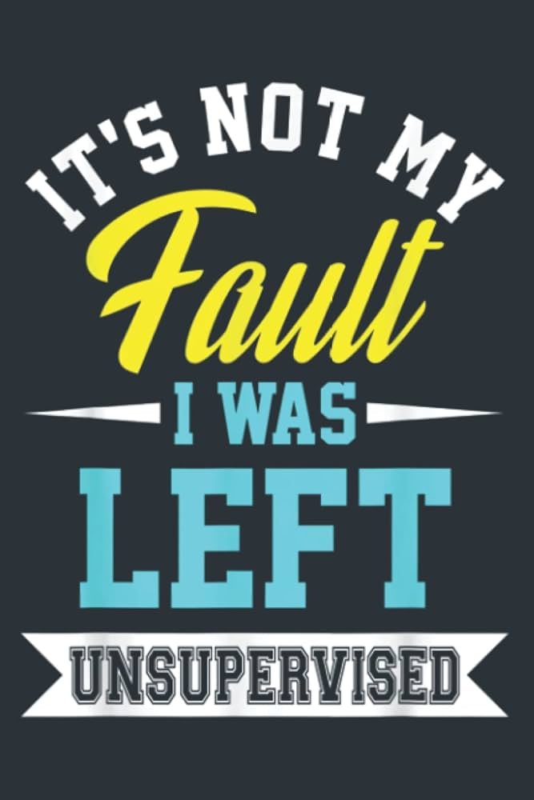
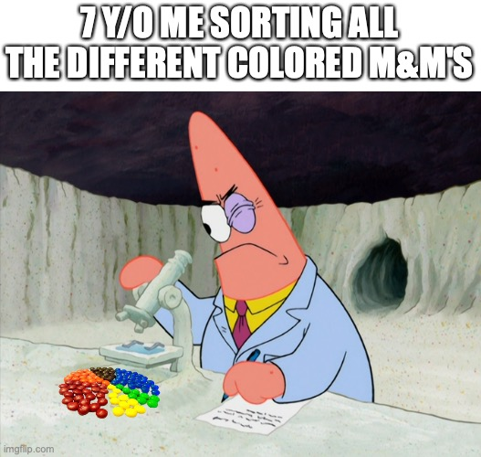
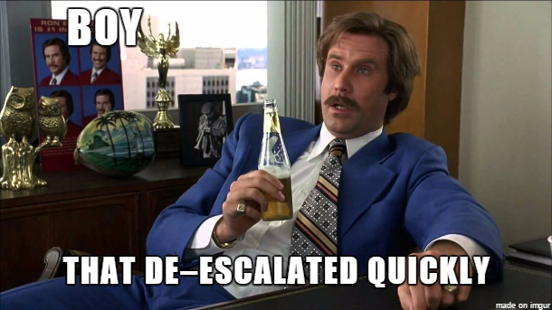

Sesión de laboratorio 5: Aprendizaje No Supervisado
Objetivos de la sesión
🎯 Objetivo General: Explorar los principios y aplicaciones del aprendizaje no supervisado utilizando ejemplos visuales e intuitivos. Aprender cómo el agrupamiento y la reducción de dimensionalidad pueden revelar estructuras ocultas en conjuntos de datos complejos, particularmente en datos de imágenes.

A diferencia de la regresión o la clasificación, el aprendizaje no supervisado no se basa en etiquetas predefinidas. Su objetivo es descubrir patrones, grupos o estructuras latentes en los datos mismos. Esto lo hace especialmente útil cuando las etiquetas no están disponibles, son costosas o son subjetivas, como a menudo ocurre en el análisis exploratorio de datos o en la investigación científica, donde buscamos identificar nuevos fenómenos.
Los algoritmos de aprendizaje no supervisado encuentran estructura en datos no etiquetados. En otras palabras, el algoritmo intenta “dar sentido” a los datos por sí mismo. A diferencia del aprendizaje supervisado, no hay una verdad fundamental contra la cual comparar las predicciones.
Dos familias principales de métodos de aprendizaje no supervisado son:
- Clustering: agrupar muestras similares (por ejemplo, K-Means, clustering jerárquico).
- Reducción de dimensionalidad: comprimir datos en un conjunto más pequeño de variables mientras se preserva la mayor cantidad de información posible (por ejemplo, PCA, t-SNE, UMAP).
Ambas técnicas son complementarias: el clustering nos ayuda a identificar categorías potenciales, mientras que la reducción de dimensionalidad nos ayuda a visualizar o simplificar datos de alta dimensión.
Esta sesión de laboratorio te guiará a través de aplicaciones prácticas de estas técnicas utilizando el conjunto de datos Cars93 para clustering y el conjunto de datos Fashion-MNIST para reducción de dimensionalidad y clustering de imágenes. Aprenderás a preprocesar datos, elegir algoritmos apropiados, evaluar resultados e interpretar hallazgos de manera significativa.
1. Hacer Clustering con el conjunto de datos Cars93
El conjunto de datos Cars93 recopila mediciones y variables descriptivas para 93 modelos de automóviles. Es lo suficientemente pequeño para la exploración interactiva, pero lo suficientemente rico como para ilustrar problemas comunes en el clustering: características con diferentes escalas, la necesidad de un preprocesamiento sensato y la interpretación de los centros de clúster aprendidos.
En esta parte del laboratorio nos centraremos únicamente en las siguientes características numéricas:
Price, MPG.highway, MPG.city, Horsepower, Fuel.tank.capacity, Passengers, Weight, Length, y RPM.
Al restringir la atención a este subconjunto, buscamos aislar las señales mecánicas y relacionadas con el tamaño que típicamente impulsan el clustering de vehículos. Los experimentos en este laboratorio deben utilizar sólo las características enumeradas anteriormente.
1.1. Preprocesamiento y exploración de datos
🎯 Objetivo: Probar tus conocimientos sobre el preprocesamiento de conjuntos de datos.
Carga el conjunto de datos desde el siguiente enlace e inspecciona sus estadísticas globales: rango, escalas típicas y valores faltantes. Interpreta lo que mide cada característica (unidades y significado semántico) y considera elecciones de preprocesamiento simples que hagan que el clustering sea significativo.
📝 Preguntas:
- ¿Cuáles son los pasos clave de preprocesamiento que tomarás para preparar los datos para el clustering?
- ¿Cómo difieren las características en escala y distribución? ¿Qué características podrían dominar los cálculos de distancia si no se escalan?
- ¿Hay valores faltantes o atípicos que necesiten ser abordados antes del clustering?
1.2. Clustering con K-Means y evaluación
🎯 Objetivo: Aprender a aplicar el clustering K-Means al conjunto de datos Cars93 y evaluar los resultados.

K-Means es un algoritmo de clustering simple y ampliamente utilizado que particiona los datos en K grupos en función de la similitud de características. K-Means particiona el espacio de características en K regiones al asignar iterativamente puntos al centroide más cercano y recomputar los centroides como medias de clúster. Los centroides son las medias aritméticas que resumen cada grupo. K-Means es simple, rápido e interpretable, pero depende en gran medida del número de clústeres K y de la métrica de distancia inducida por el preprocesamiento elegido.Al elegir K debes equilibrar dos objetivos: (1) calidad del clúster, que puede cuantificarse con puntuaciones internas como la silhouette, y (2) parsimonia: evitamos muchos clústeres pequeños que añaden poca interpretabilidad. La puntuación de silhouette mide qué tan bien se ajusta cada punto a su clúster asignado en comparación con otros clústeres; una mayor silhouette indica una separación más clara.
Utiliza el widget K-Means en Orange para probar varios valores de K e inspeccionar los centroides en una tabla.
📝 Preguntas:
- ¿Cómo cambia la puntuación de silhouette a medida que varías K? ¿Hay un valor óptimo claro?
- Examina los perfiles de los centroides para diferentes K. ¿Representan tipos de vehículos significativos?
- ¿Qué tan sensibles son los clústeres a tus elecciones de preprocesamiento (por ejemplo, escalado)?
1.3. Interpretación y visualización de clústeres
🎯 Objetivo: Aprender a interpretar y visualizar los clústeres obtenidos de K-Means.
Una vez que hayas elegido un K adecuado y obtenido clústeres, el siguiente paso es interpretar lo que representan. Los perfiles de los centroides se pueden convertir de nuevo a las unidades de características originales para comprender las características típicas de cada clúster.
K-Means es no supervisado: encuentra estructura en las características de entrada sin ver el tipo de automóvil o las etiquetas de segmento. Para evaluar cuán significativos son los grupos descubiertos, puedes compararlos con etiquetas conocidas (por ejemplo, tipo o fabricante) y observar las distribuciones de etiquetas dentro de los clústeres. Para esto, utilizaremos un pequeño fragmento de Python dentro del widget Python Script de Orange. El fragmento a continuación visualiza, para cada clúster, la distribución de etiquetas verdaderas (si existe una etiqueta verdadera en la tabla). Pégalo en un widget Python Script que reciba la salida de K-Means (por lo que in_data contiene la meta de Cluster asignada y cualquier variable de clase disponible).
# Histogram: true-label distribution per cluster
# Paste this into a Python Script widget connected to the output of K-Means.
# It expects a single Orange input (available as `in_data`).
import matplotlib.pyplot as plt
import numpy as np
# --- LOAD DATA ---
X = in_data.X
y = in_data.Y
class_var = in_data.domain.class_var
# --- CONVERT LABELS TO STRINGS IF POSSIBLE ---
if class_var and class_var.is_discrete and class_var.values:
labels = np.array([class_var.values[int(v)] for v in y])
else:
labels = np.array(y).astype(str)
# --- EXTRACT CLUSTERS ---
meta_names = [m.name for m in in_data.domain.metas]
if 'Cluster' in meta_names:
clusters, _ = in_data.get_column_view('Cluster')
clusters = np.array(clusters)
cluster_ids = np.unique(clusters)
n_clusters = len(cluster_ids)
else:
clusters = np.zeros(len(X))
cluster_ids = [0]
n_clusters = 1
# --- PLOT HISTOGRAMS OF LABEL DISTRIBUTION PER CLUSTER ---
fig, ax = plt.subplots(nrows=1, ncols=n_clusters, figsize=(5 * n_clusters, 4))
# ensure iterable axes even if one cluster
if n_clusters == 1:
ax = [ax]
for i, cid in enumerate(cluster_ids):
mask = clusters == cid
cluster_labels = labels[mask]
unique_vals, counts = np.unique(cluster_labels, return_counts=True)
ax[i].bar(unique_vals, counts, color="cornflowerblue", alpha=0.8)
ax[i].set_title(f"Cluster {cid}")
ax[i].set_xlabel("True label")
ax[i].set_ylabel("Count")
ax[i].grid(which='major', color='gray', alpha=0.4, linestyle='dotted')
# rotate x-axis tick labels by 45 degrees for readability
ax[i].set_xticks(range(len(unique_vals)))
ax[i].set_xticklabels(unique_vals, rotation=45, ha='right')
plt.tight_layout()
plt.show()Este código genera un histograma para cada clúster, mostrando cuántos automóviles de cada etiqueta verdadera están presentes. Esto ayuda a evaluar si los clústeres corresponden a categorías significativas.
📝 Preguntas:
- ¿Los clústeres corresponden a tipos de vehículos o segmentos conocidos? ¿Qué clústeres son los más homogéneos?
- ¿Hay clústeres que mezclan muchas etiquetas diferentes? ¿Qué podría indicar esto sobre las características utilizadas?
1.4. Análisis de centroides
🎯 Objetivo: Aprender a interpretar los centroides de K-Means en el espacio de características original.

Los centroides resumen lo que K-Means ha aprendido. Si estandarizaste las características antes de la agrupación, los centroides se expresan en el espacio escalado. Para interpretarlos en unidades reales (por ejemplo, precio en dólares, peso en libras), debes deshacer la escala. Los widgets de Orange no proporcionan una transformación inversa automática, por lo que reconstruiremos los centroides y los desestandarizaremos en un breve Python Script que acepta dos entradas: el dataset original después de la selección de características (pre-escalado) y los centroides de K-Means (post-escalado). El script a continuación asume que utilizaste estandarización (media cero, varianza unitaria).
import numpy as np
import Orange
# --- ACCESS INPUTS ---
if in_datas[0].X.shape[0] > in_datas[1].X.shape[0]:
orig_data = in_datas[0] # original data
centroid_data = in_datas[1] # output from KMeans or scaled data
elif in_datas[0].X.shape[0] < in_datas[1].X.shape[0]:
orig_data = in_datas[1] # original data
centroid_data = in_datas[0] # output from KMeans or scaled data
else:
print('Error! One of your input data should be the centroids!')
# --- COMPUTE MEAN AND STD ---
X_orig = orig_data.X
means = np.nanmean(X_orig, axis=0)
stds = np.nanstd(X_orig, axis=0)
# --- INVERSE TRANSFORM CENTROIDS ---
centroids_scaled = centroid_data.X
centroids_rescaled = centroids_scaled * stds + means
# --- CREATE DOMAIN WITHOUT CLASS VARIABLE ---
attrs = orig_data.domain.attributes # only features
new_domain = Orange.data.Domain(attrs) # exclude class_var
# --- CREATE TABLE ---
centroid_table = Orange.data.Table.from_numpy(
new_domain,
centroids_rescaled
)
centroid_table.name = "De-standardized Centroids"
out_data = centroid_tablePega esto en un widget de Python Script que reciba dos entradas (primero el widget File original; segundo los centroides de K-Means). Puedes conectar la salida a una Data Table, Heat Map o Box Plot para inspeccionar qué características son altas o bajas en cada centroide.
📝 Preguntas:
- ¿Qué revelan los centroides desestandarizados sobre las características típicas de cada clúster?
- ¿Qué características distinguen más claramente los clústeres? ¿Hay patrones sorprendentes?
- ¿Los centroides corresponden a tipos de vehículos o segmentos de mercado significativos?
2. Representación de Baja Dimensionalidad y Clustering en un Conjunto de Datos de Imágenes
En esta segunda parte, trabajaremos con datos de imágenes para explorar el clustering y las representaciones de baja dimensionalidad. Específicamente, usaremos un subconjunto de la base de datos Fashion-MNIST (disponible aquí).
A diferencia de los datos tabulares Cars93, estos conjuntos de datos tienen miles de características (píxeles), por lo que la visualización y la interpretación requieren reducción de dimensionalidad.
2.1 Preprocesamiento del Conjunto de Datos
El conjunto de datos Fashion-MNIST contiene imágenes en escala de grises de 28×28 píxeles, cada una correspondiente a una de diez categorías de ropa codificadas en la variable label.
| Label | Item |
|---|---|
| 0 | Camiseta/top |
| 1 | Pantalón |
| 2 | Jersey |
| 3 | Vestido |
| 4 | Abrigo |
| 5 | Sandalias |
| 6 | Camisa |
| 7 | Zapatillas |
| 8 | Bolso |
| 9 | Botín |
Asegúrate de que las etiquetas sean categóricas, no numéricas (puedes usar el widget Edit Domain para cambiarlas).
Para visualizar algunas muestras del conjunto de datos, conecta el widget File a un widget Python Script y pega lo siguiente:
import numpy as np
import matplotlib.pyplot as plt
# Get data and labels
X = in_data.X
y = in_data.Y
class_var = in_data.domain.class_var
n_samples, n_features = X.shape
# Shuffle data for visualization
idx = np.arange(n_samples)
np.random.shuffle(idx)
X = X[idx]
y = y[idx]
# Convert numeric labels to strings if available
if class_var.is_discrete and class_var.values:
labels = np.array([class_var.values[int(v)] for v in y])
else:
labels = y.astype(int)
# Determine image size
side = int(np.sqrt(n_features))
if side * side != n_features:
print(f"Warning: {n_features} features not a perfect square — forcing 28×28")
side = 28
# Plot random samples
n_show = min(25, n_samples)
plt.figure(figsize=(6,6))
for i in range(n_show):
plt.subplot(5, 5, i + 1)
plt.imshow(X[i].reshape(side, side), cmap="gray")
plt.axis("off")
plt.title(str(labels[i]))
plt.tight_layout()
plt.show()Este código mostrará una cuadrícula de 25 imágenes aleatorias del conjunto de datos, cada una etiquetada con su categoría correspondiente.
📝 Preguntas:
- ¿Qué revelan las muestras visualizadas sobre la diversidad y complejidad del conjunto de datos?
- ¿Qué tan bien representan las imágenes sus respectivas categorías?
- ¿Qué desafíos podrían surgir al agrupar o clasificar estas imágenes?
2.2. Clustering y Análisis de Centroides
🎯 Objetivo: Aplicar clustering K-Means al conjunto de datos Fashion-MNIST y analizar los clústeres resultantes.
Debido a la alta dimensionalidad de los datos de imagen, agrupar directamente en valores de píxeles puede ser un desafío. Sin embargo, K-Means aún puede proporcionar información sobre la estructura del conjunto de datos. Utiliza el widget K-Means en Orange para agrupar las imágenes, experimentando con diferentes valores de K.
Luego, visualiza los centroides de los clústeres utilizando el siguiente script de Python:
import matplotlib.pyplot as plt
import numpy as np
# --- CONFIGURATION ---
img_shape = (28, 28) # adjust to your dataset
# --- LOAD DATA ---
X = in_data.X
# --- EXTRACT CLUSTERS ---
meta_names = [m.name for m in in_data.domain.metas]
if 'Cluster' in meta_names:
clusters, _ = in_data.get_column_view('Cluster')
clusters = np.array(clusters)
cluster_ids = np.unique(clusters)
else:
clusters = np.zeros(X.shape[0], dtype=int)
cluster_ids = [0]
# --- COMPUTE CENTROIDS ---
centroids = [np.mean(X[clusters == c], axis=0) for c in cluster_ids]
# --- PLOT CENTROIDS ---
fig, axes = plt.subplots(1, len(cluster_ids), figsize=(2*len(cluster_ids), 2))
axes = np.atleast_1d(axes)
for i, ax in enumerate(axes):
ax.imshow(centroids[i].reshape(img_shape), cmap="gray")
ax.set_title(f"Cluster {i}")
ax.axis("off")
plt.tight_layout()
plt.show()Pega esto en un widget Python Script conectado a la salida de K-Means. Mostrará los centroides como imágenes, lo que te permitirá interpretar lo que representa cada clúster.
📝 Preguntas:
- ¿Qué revelan los centroides visualizados sobre las características de cada clúster?
- ¿Cómo se comparan los clústeres con las categorías originales en el conjunto de datos Fashion-MNIST?
- ¿Qué información se puede extraer de los resultados del clustering en relación con la estructura del conjunto de datos y los posibles desafíos en la clasificación?
2.3 Representación de Baja Dimensionalidad
🎯 Objetivo: Aprender a aplicar técnicas de reducción de dimensionalidad para visualizar datos de imagen de alta dimensión.
Los datos de alta dimensión, como las imágenes, pueden ser difíciles de visualizar directamente. El conjunto de datos original vive en un espacio de 784 dimensiones (28×28), pero podemos usar la reducción de dimensionalidad para proyectar los datos en dos dimensiones mientras se preserva la mayor parte de la estructura posible. Dos métodos comunes son:
- Análisis de Componentes Principales (PCA): una técnica lineal que encuentra las direcciones de máxima varianza en los datos.
- t-Distributed Stochastic Neighbor Embedding (t-SNE): una técnica no lineal que preserva las relaciones locales y es particularmente efectiva para visualizar clústeres.
Utiliza el siguiente Python Script para realizar PCA en el conjunto de datos Fashion-MNIST y visualizar los resultados:
import numpy as np
import matplotlib.pyplot as plt
from sklearn.decomposition import PCA
from matplotlib.offsetbox import OffsetImage, AnnotationBbox
# --- CONFIGURATION ---
img_shape = (28, 28)
# --- LOAD DATA ---
X = in_data.X
# --- GET CLUSTER LABELS ---
meta_names = [m.name for m in in_data.domain.metas]
if 'Cluster' in meta_names:
clusters, _ = in_data.get_column_view('Cluster')
clusters = np.array(clusters)
else:
clusters = np.zeros(X.shape[0], dtype=int)
cluster_labels = np.array([str(c) for c in clusters])
# --- PCA PROJECTION ---
pca = PCA(n_components=2, random_state=42)
X_2D = pca.fit_transform(X)
# --- COMPUTE CENTROIDS ---
unique_labels = np.unique(cluster_labels)
centroids = [np.mean(X[cluster_labels == lbl], axis=0) for lbl in unique_labels]
centroid_positions = [np.mean(X_2D[cluster_labels == lbl], axis=0) for lbl in unique_labels]
# --- PLOT PCA PROJECTION ---
plt.figure(figsize=(7,6))
scatter = plt.scatter(X_2D[:,0], X_2D[:,1],
c=np.arange(len(unique_labels))[np.searchsorted(unique_labels, cluster_labels)],
cmap='tab10', s=15, alpha=0.6)
handles, _ = scatter.legend_elements()
plt.legend(handles, unique_labels, title="Cluster", loc="best")
plt.xlabel("PCA 1")
plt.ylabel("PCA 2")
plt.title("PCA Projection with Cluster Centroids")
# --- ADD CENTROID IMAGES ---
for pos, centroid in zip(centroid_positions, centroids):
imagebox = OffsetImage(centroid.reshape(img_shape), cmap='gray', zoom=0.6)
ab = AnnotationBbox(imagebox, pos, frameon=False)
plt.gca().add_artist(ab)
plt.tight_layout()
plt.show()You can do the same with t-SNE (It might take a few minutes to compute):
import numpy as np
import matplotlib.pyplot as plt
from sklearn.manifold import TSNE
from matplotlib.offsetbox import OffsetImage, AnnotationBbox
# --- CONFIGURATION ---
img_shape = (28, 28)
perplexity = 30
random_state = 42
# --- LOAD DATA ---
X = in_data.X
# --- CLUSTER LABELS ---
meta_names = [m.name for m in in_data.domain.metas]
if 'Cluster' in meta_names:
cluster_values, _ = in_data.get_column_view('Cluster')
clusters = np.array(cluster_values)
else:
clusters = np.zeros(X.shape[0], dtype=int)
cluster_labels = np.array([str(c) for c in clusters])
# --- RUN t-SNE ---
tsne = TSNE(n_components=2, perplexity=perplexity, random_state=random_state, init='pca')
X_2D = tsne.fit_transform(X)
# --- COMPUTE CENTROIDS ---
unique_labels = np.unique(cluster_labels)
centroids = [np.mean(X[cluster_labels == lbl], axis=0) for lbl in unique_labels]
centroid_positions = [np.mean(X_2D[cluster_labels == lbl], axis=0) for lbl in unique_labels]
# --- PLOT t-SNE PROJECTION ---
plt.figure(figsize=(7,6))
scatter = plt.scatter(X_2D[:,0], X_2D[:,1],
c=np.arange(len(unique_labels))[np.searchsorted(unique_labels, cluster_labels)],
cmap='tab10', s=15, alpha=0.6)
handles, _ = scatter.legend_elements()
plt.legend(handles, unique_labels, title="Cluster", loc="best")
plt.xlabel("t-SNE 1")
plt.ylabel("t-SNE 2")
plt.title("t-SNE Projection with Cluster Centroids")
# --- ADD CENTROID IMAGES ---
for pos, centroid in zip(centroid_positions, centroids):
imagebox = OffsetImage(centroid.reshape(img_shape), cmap='gray', zoom=0.7)
ab = AnnotationBbox(imagebox, pos, frameon=False)
plt.gca().add_artist(ab)
plt.tight_layout()
plt.show()Pega cualquiera de estos en un widget de Python Script conectado a la salida de K-Means. El script proyectará los datos de alta dimensión en 2D y los trazará, coloreando los puntos según su asignación de clúster. Los centroides también se muestran como imágenes.
📝 Preguntas:
- ¿Cómo difieren las proyecciones de PCA y t-SNE en términos de separación y estructura de clústeres?
- ¿Los clústeres identificados por K-Means corresponden a regiones distintas en el espacio 2D?
- ¿Qué información se puede obtener de las representaciones de baja dimensión sobre la estructura del conjunto de datos y los posibles desafíos en la clasificación?
Nota final
✨ ¡Felicidades por completar el Laboratorio 5! Has explorado el fascinante mundo del aprendizaje no supervisado, profundizando en técnicas de clustering y reducción de dimensionalidad. Estas herramientas son invaluables para descubrir patrones ocultos en los datos, especialmente cuando las etiquetas son escasas o no están disponibles.
La próxima sesión cambiaremos a un paradigma diferente: sistemas de recomendación. Aquí, el objetivo es predecir las preferencias del usuario basándose en el comportamiento pasado.
📤 Cómo entregar
- Guarda/exporta tu informe completado como PDF.
- Renombra el archivo PDF siguiendo la convención de abajo.
- Ve a Aula Global → esta asignatura → Tareas → buzón de entrega “Lab 5”, y sube el PDF antes de la fecha límite.
- Adjunta también tu archivo de flujo de trabajo de Orange (.ows, guardado con Archivo > Guardar como… en Orange) en la misma entrega.
Nombre del archivo: Lab5_Apellido_Nombre.pdf (ej. Lab5_Garcia_Maria.pdf)